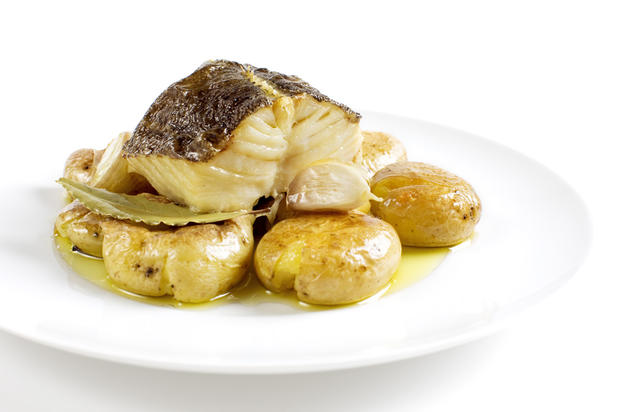

Recipe Bacalhau à Lagareiro

Third Best Portuguese Dish
This classic from the Portuguese cuisine goes by many names: Bacalhau à Lagareiro, Bacalhau no forno, or Bacalhau assado com batatas a murro.
No matter the name, this is one of the most renowned and frequently made recipes of salted, cured cod. It originates from the Beira region where the use to cook it in the ovens of the olive oil cellars during the olive oil season at the end of October.
Ingredients
- 800g of dessalted codfish
- 1 bay leaf
- 600g of potatoes
- 3 sliced garlic cloves
- 2 dl of olive oil extra virgin
- Salt
- Cilantro
Preparation
- Soak the codfish according to instruction.
- Heat the oven to 200°C
- Wash the potatoes and bring them to a boil. Let them boil for a bit, then take them out of the water, place them on a tray and let them finish cooking in the pre-heated oven. When the potatoes are soft, take them out of the oven and punch them with your closed fist. You can place a kitchen cloth between your hand and the hot potatoes so you don’t get burned. Theese potatoes are called “batatas a murro” – punched potatoes.
- Place the cod on a tray. Drizzle half of the olive oil and add the garlic and the bay leaf. Place the tray in the oven (200 degrees celcius). Occationally drizzle the cod with the olive oil to moisten it.
- Place the potates on a serving tray, layer the cod on top, and drizzle with the rest of the olive oil. Finish with some chopped cilantro before serving.